Logan Guild / Case studies
Employment and Inflation Measures
13 pages. Read below without downloading. Select a page image to enlarge it.
Page 1 text
Concepts in Real Life: Presentation 2 By Brady Folster, Logan Guild, Conner Holt, Josiah Schemmann, Ziyad Hamed
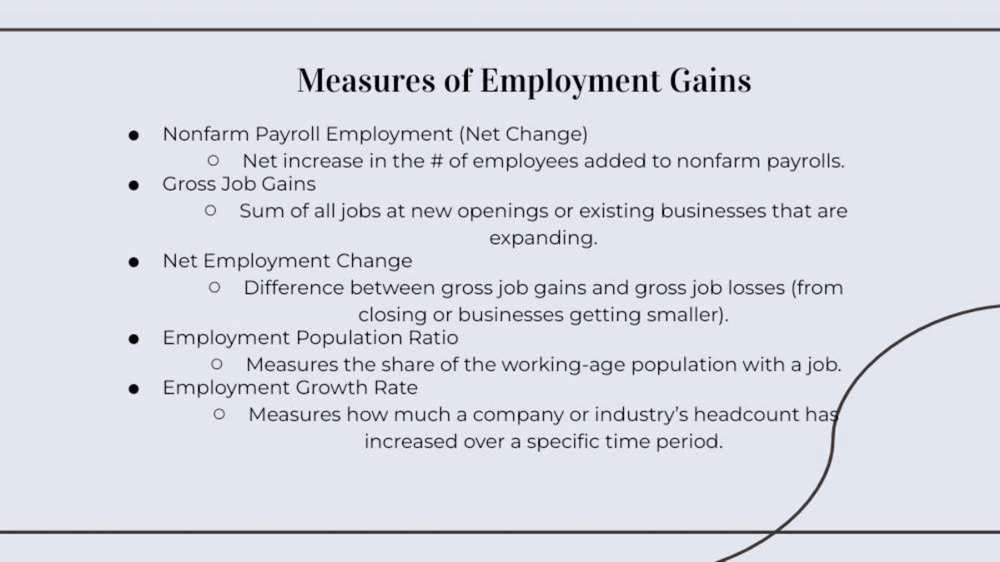
Page 2 text
Nonfarm Payroll Employment (Net Change) Net increase in the # of employees added to nonfarm payrolls. Gross Job Gains Sum of all jobs at new openings or existing businesses that are expanding. Net Employment Change Difference between gross job gains and gross job losses (from closing or businesses getting smaller). Employment Population Ratio Measures the share of the working-age population with a job. Employment Growth Rate Measures how much a company or industry’s headcount has increased over a specific time period. Measures of Employment Gains
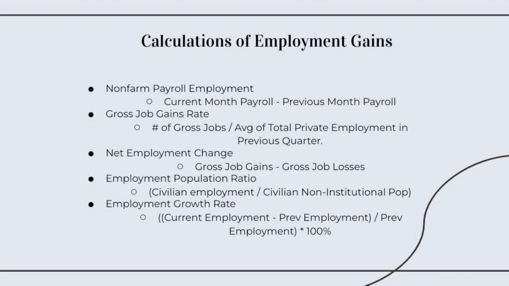
Page 3 text
Nonfarm Payroll Employment Current Month Payroll - Previous Month Payroll Gross Job Gains Rate # of Gross Jobs / Avg of Total Private Employment in Previous Quarter. Net Employment Change Gross Job Gains - Gross Job Losses Employment Population Ratio (Civilian employment / Civilian Non-Institutional Pop) Employment Growth Rate ((Current Employment - Prev Employment) / Prev Employment) * 100% Calculations of Employment Gains
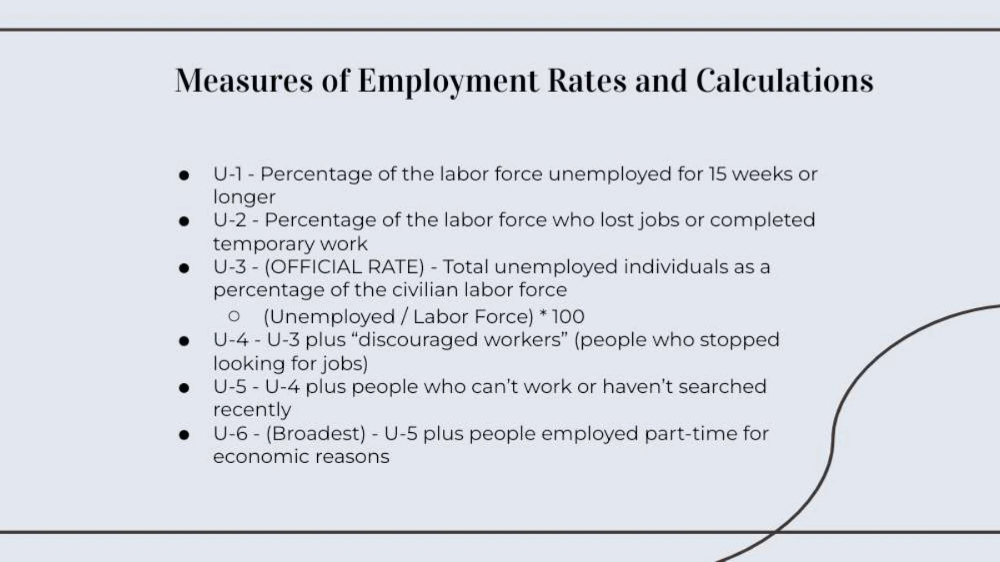
Page 4 text
U-1 - Percentage of the labor force unemployed for 15 weeks or longer U-2 - Percentage of the labor force who lost jobs or completed temporary work U-3 - (OFFICIAL RATE) - Total unemployed individuals as a percentage of the civilian labor force (Unemployed / Labor Force) * 100 U-4 - U-3 plus “discouraged workers” (people who stopped looking for jobs) U-5 - U-4 plus people who can’t work or haven’t searched recently U-6 - (Broadest) - U-5 plus people employed part-time for economic reasons Measures of Employment Rates and Calculations
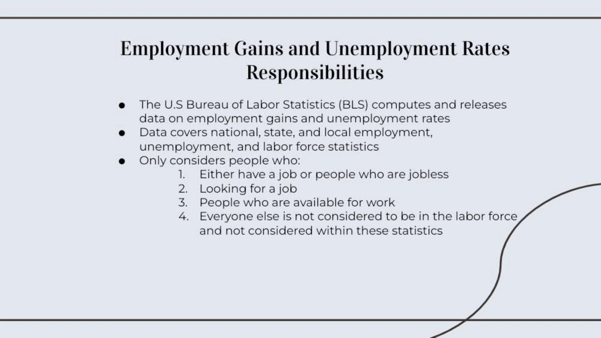
Page 5 text
The U.S Bureau of Labor Statistics (BLS) computes and releases data on employment gains and unemployment rates Data covers national, state, and local employment, unemployment, and labor force statistics Only considers people who: Either have a job or people who are jobless Looking for a job People who are available for work Everyone else is not considered to be in the labor force and not considered within these statistics Employment Gains and Unemployment Rates Responsibilities
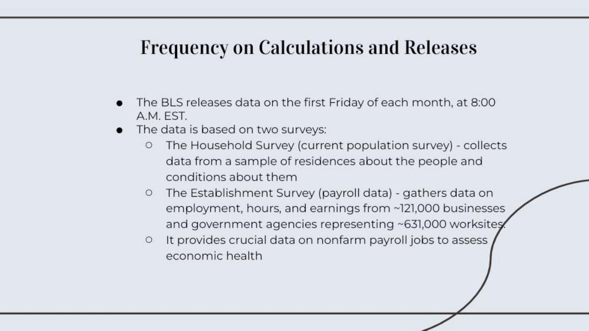
Page 6 text
The BLS releases data on the first Friday of each month, at 8:00 A.M. EST. The data is based on two surveys: The Household Survey (current population survey) - collects data from a sample of residences about the people and conditions about them The Establishment Survey (payroll data) - gathers data on employment, hours, and earnings from ~121,000 businesses and government agencies representing ~631,000 worksites. It provides crucial data on nonfarm payroll jobs to assess economic health Frequency on Calculations and Releases
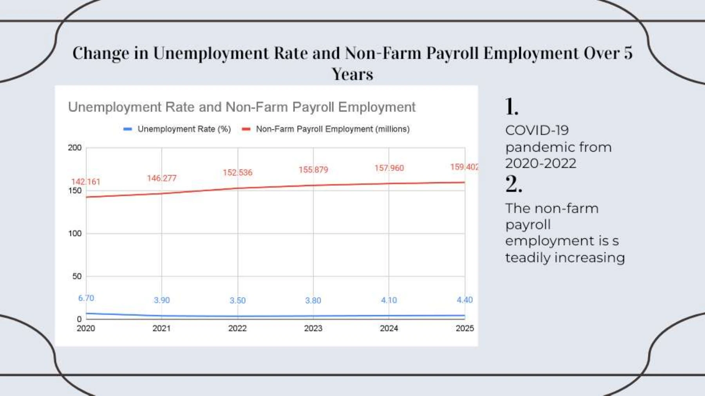
Page 7 text
Change in Unemployment Rate and Non-Farm Payroll Employment Over 5 Years The non-farm payroll employment is steadily increasing 2. COVID-19 pandemic from 2020-2022 1.
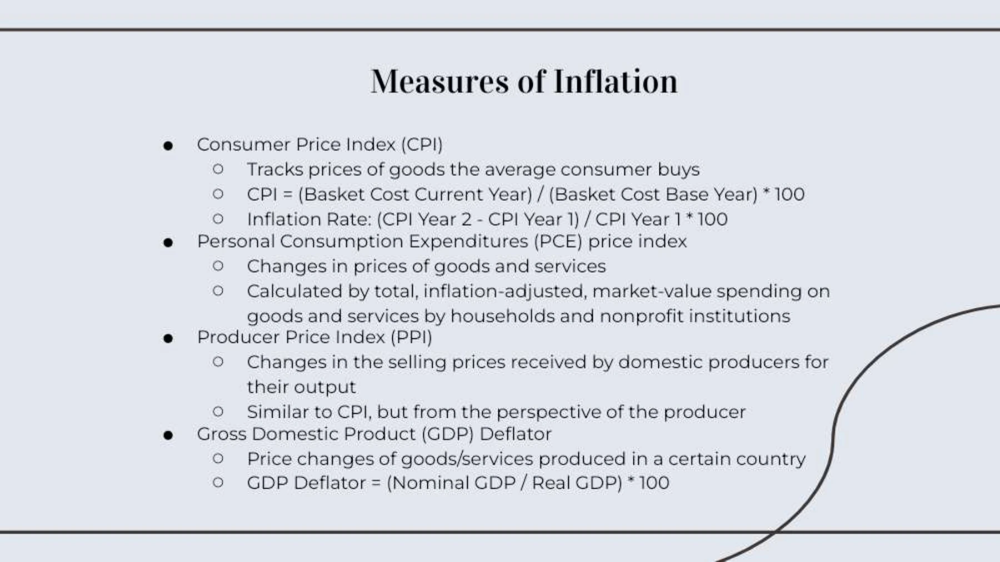
Page 8 text
Consumer Price Index (CPI) Tracks prices of goods the average consumer buys CPI = (Basket Cost Current Year) / (Basket Cost Base Year) * 100 Inflation Rate: (CPI Year 2 - CPI Year 1) / CPI Year 1 * 100 Personal Consumption Expenditures (PCE) price index Changes in prices of goods and services Calculated by total, inflation-adjusted, market-value spending on goods and services by households and nonprofit institutions Producer Price Index (PPI) Changes in the selling prices received by domestic producers for their output Similar to CPI, but from the perspective of the producer Gross Domestic Product (GDP) Deflator Price changes of goods/services produced in a certain country GDP Deflator = (Nominal GDP / Real GDP) * 100 Measures of Inflation
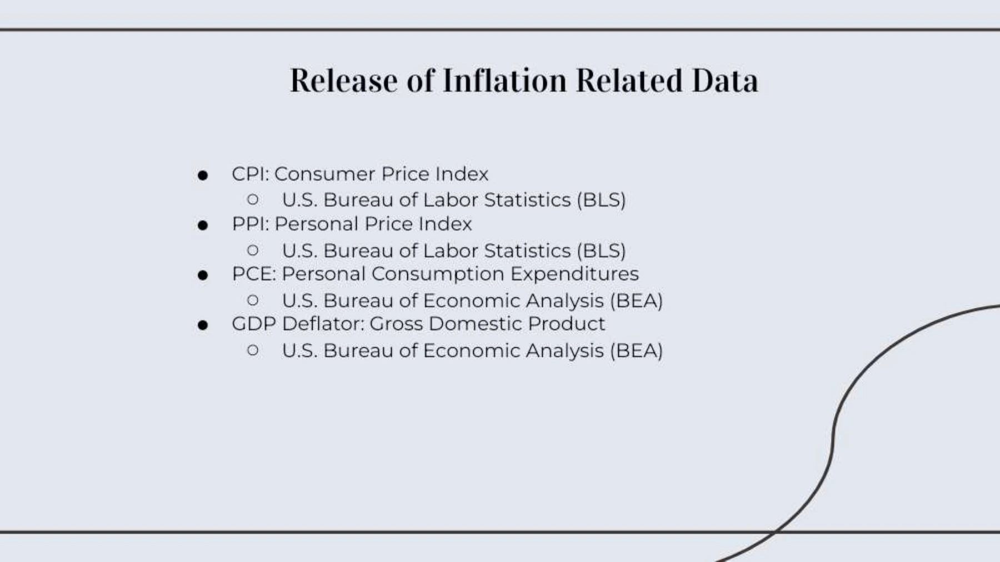
Page 9 text
CPI: Consumer Price Index U.S. Bureau of Labor Statistics (BLS) PPI: Personal Price Index U.S. Bureau of Labor Statistics (BLS) PCE: Personal Consumption Expenditures U.S. Bureau of Economic Analysis (BEA) GDP Deflator: Gross Domestic Product U.S. Bureau of Economic Analysis (BEA) Release of Inflation Related Data
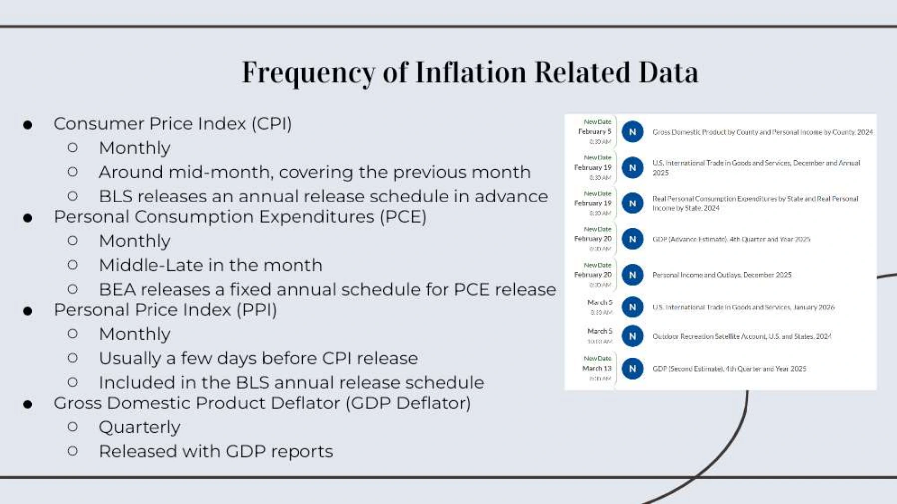
Page 10 text
Consumer Price Index (CPI) Monthly Around mid-month, covering the previous month BLS releases an annual release schedule in advance Personal Consumption Expenditures (PCE) Monthly Middle-Late in the month BEA releases a fixed annual schedule for PCE release Personal Price Index (PPI) Monthly Usually a few days before CPI release Included in the BLS annual release schedule Gross Domestic Product Deflator (GDP Deflator) Quarterly Released with GDP reports Frequency of Inflation Related Data
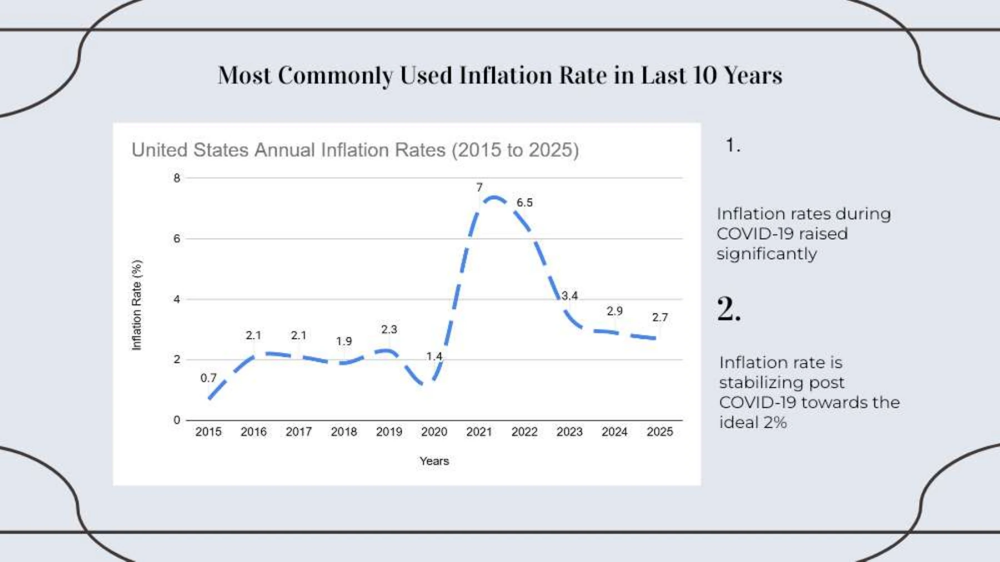
Page 11 text
Most Commonly Used Inflation Rate in Last 10 Years Inflation rate is stabilizing post COVID-19 towards the ideal 2% 2. Inflation rates during COVID-19 raised significantly
Page 12 text
Thank You! Any Questions?
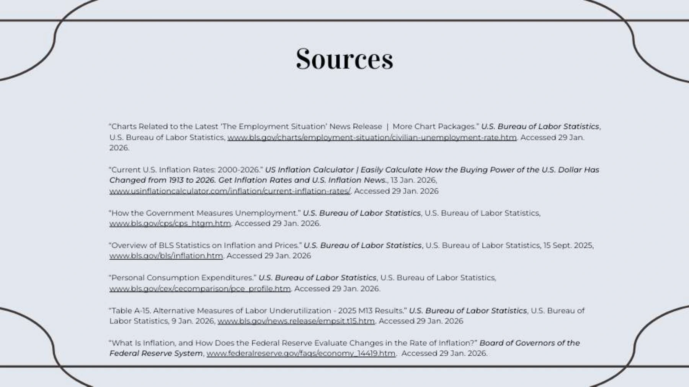
Page 13 text
Sources “Charts Related to the Latest ‘The Employment Situation’ News Release | More Chart Packages.” U.S. Bureau of Labor Statistics, U.S. Bureau of Labor Statistics, www.bls.gov/charts/employment-situation/civilian-unemployment-rate.htm. Accessed 29 Jan. 2026. “Current U.S. Inflation Rates: 2000-2026.” US Inflation Calculator | Easily Calculate How the Buying Power of the U.S. Dollar Has Changed from 1913 to 2026. Get Inflation Rates and U.S. Inflation News., 13 Jan. 2026, www.usinflationcalculator.com/inflation/current-inflation-rates/. Accessed 29 Jan. 2026 “How the Government Measures Unemployment.” U.S. Bureau of Labor Statistics, U.S. Bureau of Labor Statistics, www.bls.gov/cps/cps_htgm.htm. Accessed 29 Jan. 2026. “Overview of BLS Statistics on Inflation and Prices.” U.S. Bureau of Labor Statistics, U.S. Bureau of Labor Statistics, 15 Sept. 2025, www.bls.gov/bls/inflation.htm. Accessed 29 Jan. 2026 “Personal Consumption Expenditures.” U.S. Bureau of Labor Statistics, U.S. Bureau of Labor Statistics, www.bls.gov/cex/cecomparison/pce_profile.htm. Accessed 29 Jan. 2026. “Table A-15. Alternative Measures of Labor Underutilization - 2025 M13 Results.” U.S. Bureau of Labor Statistics, U.S. Bureau of Labor Statistics, 9 Jan. 2026, www.bls.gov/news.release/empsit.t15.htm. Accessed 29 Jan. 2026 “What Is Inflation, and How Does the Federal Reserve Evaluate Changes in the Rate of Inflation?” Board of Governors of the Federal Reserve System, www.federalreserve.gov/faqs/economy_14419.htm. Accessed 29 Jan. 2026.